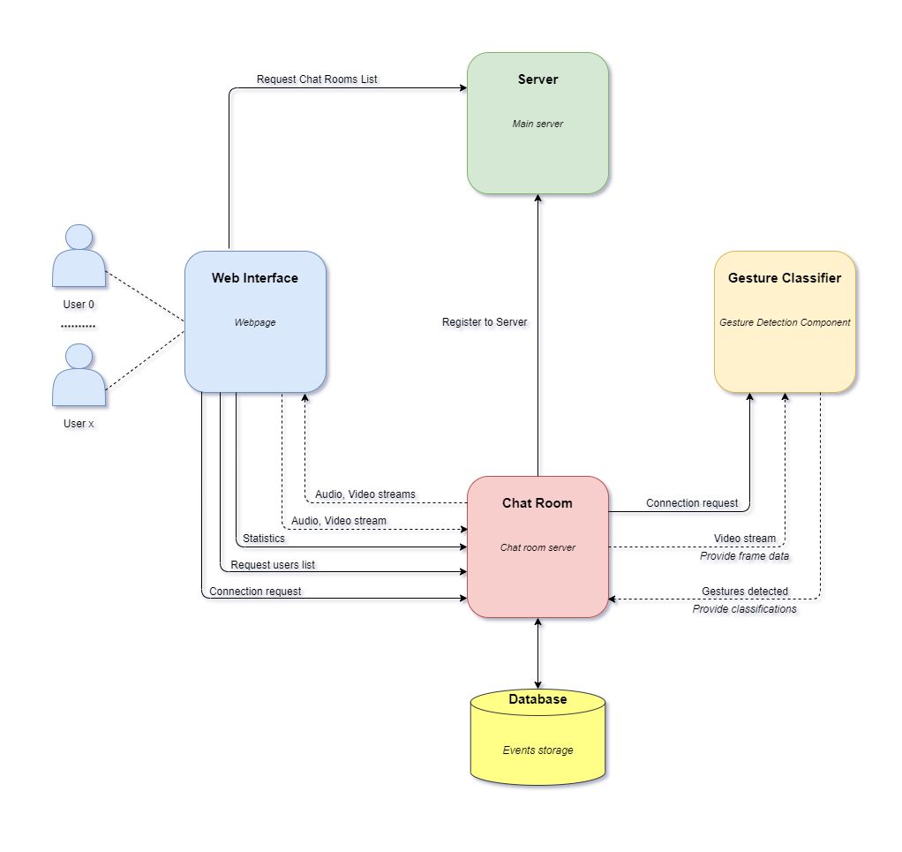

Gezr - Gesture Analyzer
1. Abstract
Our team is providing a solution for gesture analyzing implementing a web application in the form of a simple chatroom service open for users. In every room, each user is passively assuring study data through video streaming for gesture classification. Our application therefore detects, classifies, compares, and synchronizes hand and arm gestures performed by users and stores event data for further statistics creation.
2. Introduction
Human gestures are globally intersected in meaning and usage therefore computational recognision aids greatly in artificial intelligence studies. Originating from any bodily motion but commonly from the face or the hand, they support emotional recognision and the materialisation of the idea that computers are starting to understand the human body language.
3. Architecture
Our Gezr - Gesture Analyzer application follows a service based structure.
Communication:
Communication between components is done using HTTP and Sockets, mainly for actions such as video frames transferring, client-room connections and data exchange.
3.1 Web Interface
As a summary, the web interface requests the chat rooms list from the server and displays them on the "Chatrooms" page.
When connecting to a room chat, the Web Interface sends a connect request to the room instance. If the request is succesfull it opens multiple sockets connections to send and receive video frames from the chat room server.
It also receives events like user connecting, user disconnecting, and gestures from the chat room. The detected gestures are displayed on a little rectangular box in the corner of the video feed.
About page:

Chatroom selecting page:

Chatroom specific page:

Contact page:

3.2 Main Server
The Server serves two roles:
- Serving the web application to the client
- Storing the informations of the chat rooms instances
When a chat room instance is created it will do a POST request to the server to added to the chat rooms pool. The list of chat rooms can be obtained by doing a GET request at /chatrooms.
Used technologies:
- nodejs
- express

3.3 Chatroom
Chat Room communication:
When instanced the chat room will do a POST request to the server with it's informations. The chat rooms can be secured with a password to avoid uninvited guests.
Web Client communication:
When a client is connected it will establish 3 socket connections to the chatroom:
- Input Socket - The video feed from the client will be transmitted through this socket
- Output Sockets - The video feed of each participant will be transmitted to the client through these sockets
- Event Sockets - Events such as user disconnecting, user connecting, user hand gestures, and group gestures will be sent through this socket
Data storing and statistics:
These events will be stored in a MongoDB database to compile statistics of interest. The statistics are accessible through a GET request on the /stats path.
Used technologies:
- nodejs
- express

3.4 Gesture Classifier
Chat room instances are requesting connections for the Gesture Classifier in order to proceed with the gestures studying for a specific chat room.
A successful connection through a socket is followed by a frame exchange (in a base64 format) and constant gesture study resulting in real time classifications (resulted json data).
Used technologies:
- python
- opencv

4. Data Modelling
For this website application, we are proposing the use of JSON-ld format for data storage, such as events that are taking place along the components. (constant client-room, client-client interactions) Events recorded through users real-time video streaming are aiding in further varied statistics generation.
We will be using MongoDB as main database service as it provides simple and efficient data manipulation methods.

5. Conclusion
There are many approaches on generating a solution for the problem of gesture analyzing, the way we have been planning upon to follow being one of the most common ones, a classifier implemented in python programming language with the use of opencv and other computer vision related libraries. As a plus, a simple chatroom website can provide an easy to learn platform for studies and research as it focuses more on the human interaction analyzing than the website complexity itself.